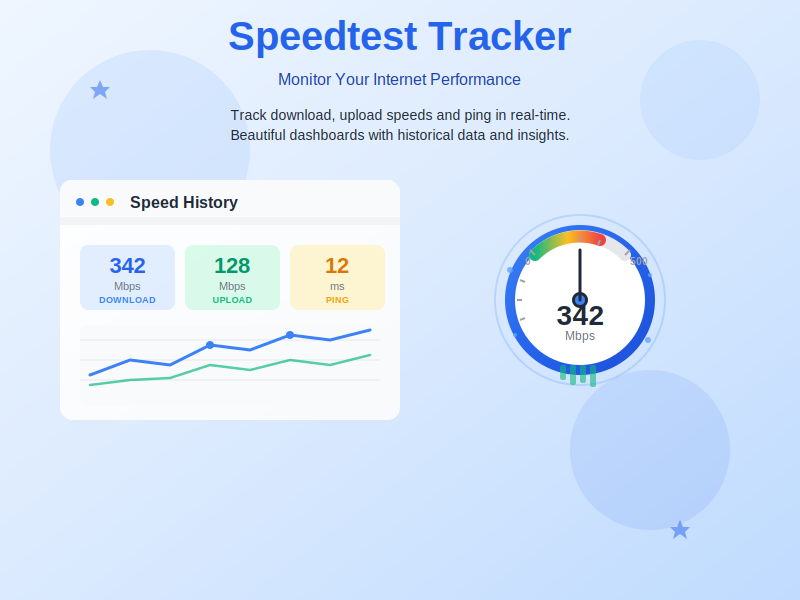

Continuously Track Your Internet Speed - Open Source Contribution
Speedtest Tracker is a self-hosted internet performance monitoring tool that continuously runs speed tests and stores the results for graphing and viewing later. Built with Laravel and powered by Ookla's Speedtest CLI, it provides a comprehensive dashboard to monitor your internet connection performance over time. As a contributor to this open-source project, I've helped enhance the platform's capabilities and improve the user experience for thousands of users worldwide who rely on accurate internet speed monitoring.
Automated speed tests run continuously at scheduled intervals to track your internet performance around the clock.
Visualize your internet speed data with interactive graphs and charts showing trends over time.
Store unlimited test results and access historical performance data for analysis and comparison.
Get alerts when your internet speed drops below configured thresholds via multiple channels.
Complete control over your data with easy deployment using Docker or traditional hosting methods.
Access your dashboard from any device with a modern, mobile-friendly interface.
Configure custom schedules for speed tests to run at specific times or intervals.
View comprehensive statistics including average speeds, jitter, packet loss, and more.
Speedtest Tracker monitors and records essential internet performance metrics to give you a complete picture of your connection quality:
As an active contributor to the Speedtest Tracker project, I've been involved in improving the codebase, enhancing performance, implementing new features, and fixing critical bugs. My contributions help make internet speed monitoring more accessible, reliable, and feature-rich for users worldwide. Contributing to open source projects like Speedtest Tracker allows me to give back to the community while continuously learning and growing as a developer.
Monitor your home internet connection to verify you're getting the speeds you pay for.
Track enterprise network performance and ensure SLA compliance with your ISP.
Gather evidence for ISP support tickets with documented speed test results.
Identify patterns in internet performance and optimize your network setup.
Explore the project, contribute to the codebase, or deploy your own instance